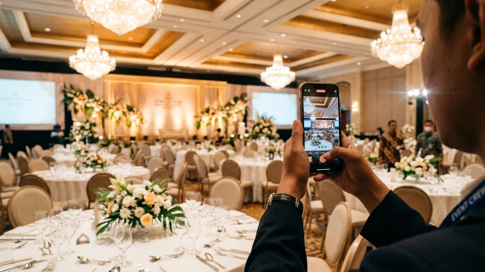
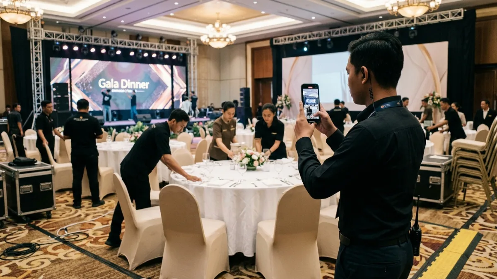

Panitia merekam teaser dekorasi dan suasana venue gala dinner menggunakan smartphone untuk materi konten promosi di media sosial.Ide konten promosi gala dinner yang efektif mencakup teaser video, profil pengisi acara, cuplikan menu, kisah tujuan acara, dan testimoni tamu sebelumnya.
- HubSpot State of Marketing Report 2026 mencatat video pendek sebagai format dengan ROI tertinggi menurut 49 persen pemasar.
- Sprout Social 2026 Content Strategy Report menemukan 52 persen pengguna Instagram paling sering berinteraksi dengan video pendek berdurasi di bawah 60 detik.
- Konten gala dinner sebaiknya dibagi menjadi pengumuman, edukasi, bukti sosial, dan pengingat.
- Tiga detik pertama video menentukan apakah calon tamu berhenti menggulir layar.
- Setiap konten perlu satu ajakan bertindak yang jelas, misalnya menghubungi panitia.
- Mengapa Konten Visual Penting untuk Gala Dinner?
- Apa Saja Ide Konten Sebelum Gala Dinner Dimulai?
- Bagaimana Membuat Hook Video Pendek untuk Gala Dinner?
- Konten Apa yang Cocok untuk Sponsor dan Mitra Gala Dinner?
- Bagaimana Memanfaatkan Konten Buatan Tamu Gala Dinner?
- Apa Kesalahan Umum dalam Membuat Konten Gala Dinner?
- Kesimpulan
- FAQ
Mengapa Konten Visual Penting untuk Gala Dinner?
Konten visual penting untuk gala dinner karena calon tamu menilai suasana, kelas acara, dan nilai tiket dari tampilan yang mereka lihat sebelum membaca keterangan.
Gala dinner dijual sebagai pengalaman: dekorasi, hidangan, pertunjukan, dan pergaulan. Pengalaman semacam ini sulit dijelaskan lewat teks saja, sehingga foto dan video menjadi alat utama untuk membangun keinginan hadir.
HubSpot State of Marketing Report 2026 mencatat bahwa 49 persen pemasar menyebut video pendek sebagai format dengan ROI tertinggi, disusul video panjang 29 persen dan siaran langsung 25 persen.
Sprout Social 2026 Content Strategy Report menambahkan bahwa 52 persen pengguna Instagram cenderung berinteraksi dengan video pendek di bawah 60 detik.
Kedua data tersebut menunjukkan bahwa panitia gala dinner sebaiknya menjadikan video pendek sebagai tulang punggung kalender konten, sementara foto menjadi pelengkap.
Apa Saja Ide Konten Sebelum Gala Dinner Dimulai?
Ide konten sebelum gala dinner meliputi pengumuman, teaser dekorasi, profil pengisi acara, cuplikan menu, kisah tujuan acara, hitung mundur, dan jawaban atas pertanyaan calon tamu.
Bagaimana Membuat Konten Pengumuman Gala Dinner?
Konten pengumuman gala dinner memuat nama acara, tanggal, lokasi, dress code, harga tiket, dan cara pemesanan dalam satu desain yang mudah dibaca. Panitia dapat membuat versi foto statis untuk pos utama dan versi video singkat untuk Reels atau TikTok.
Bagaimana Membuat Teaser Dekorasi dan Venue?
Teaser dekorasi gala dinner menampilkan proses persiapan venue, seperti penataan meja, panggung, dan pencahayaan, dalam video singkat. Konten semacam ini memberi gambaran suasana tanpa membuka seluruh kejutan acara.
Bagaimana Memperkenalkan Pengisi Acara dan Menu?
Perkenalan pengisi acara gala dinner dapat berupa potret, kutipan singkat, atau video sapaan dari pengisi acara. Cuplikan menu dapat berupa foto hidangan, video koki di dapur, atau penjelasan singkat tentang bahan utama.
Bagaimana Menceritakan Tujuan Acara?
Kisah tujuan gala dinner menjelaskan alasan acara diadakan, misalnya penggalangan dana untuk program tertentu atau perayaan pencapaian perusahaan. Kisah yang konkret, seperti hasil acara tahun lalu, membuat calon tamu memahami dampak tiket yang mereka beli.
Bagaimana Membuat Hook Video Pendek untuk Gala Dinner?
Hook video pendek untuk gala dinner adalah tiga detik pembuka yang menampilkan momen paling menarik, seperti detail dekorasi, pertanyaan langsung, atau angka kursi yang tersisa.

Pembuatan video pendek persiapan panggung dan penataan meja gala dinner sebagai hook visual di media sosial.Platform video pendek menampilkan banyak konten dalam satu sesi, sehingga pembuka yang lemah membuat penonton langsung melewati video. Panitia dapat menguji beberapa jenis pembuka:
- Pertanyaan langsung, misalnya apa yang disiapkan untuk malam penghargaan tahun ini.
- Visual mencolok, seperti panggung yang baru selesai ditata.
- Angka yang jelas, seperti jumlah meja yang masih tersedia.
- Janji manfaat, misalnya tiga hal yang akan dialami tamu pada malam acara.
Teks di layar sebaiknya singkat dan terbaca tanpa suara, karena banyak orang menonton dengan suara dimatikan. Video diakhiri dengan satu seruan khusus, seperti mengajak penonton untuk mengirimkan pesan ke nomor WhatsApp panitia penyelenggara.
Konten Apa yang Cocok untuk Sponsor dan Mitra Gala Dinner?
Konten untuk sponsor gala dinner mencakup profil mitra, cerita kolaborasi, ucapan terima kasih, dan tampilan logo yang proporsional, tanpa mengalahkan pesan utama acara.
Sponsor biasanya ingin eksposur yang bermakna. Panitia dapat membuat pos perkenalan sponsor, video singkat berisi alasan sponsor mendukung acara, atau konten kolaborasi yang dipublikasikan di akun kedua pihak.
Perjanjian eksposur sebaiknya dicatat sejak awal, termasuk jumlah unggahan, platform, dan waktu tayang. Dengan begitu, panitia dan sponsor memiliki ekspektasi yang sama dan tidak ada pihak yang merasa dirugikan setelah acara berlangsung.
Bagaimana Memanfaatkan Konten Buatan Tamu Gala Dinner?
Konten buatan tamu gala dinner, seperti foto dan video peserta, dapat menjadi bukti sosial lewat hashtag acara, ajakan membagikan momen, dan unggahan ulang dengan izin.
Sebelum acara, panitia dapat membuat hashtag resmi dan mencantumkannya pada undangan serta papan acara. Saat acara berlangsung, sediakan area foto dengan latar yang menampilkan hashtag tersebut.
Setelah acara, panitia dapat memilih foto terbaik untuk diunggah ulang sebagai konten pengingat bagi acara tahun berikutnya.
Setiap unggahan ulang sebaiknya menyertakan nama akun pembuat konten dan dilakukan dengan izin, terutama bila foto memuat wajah tamu atau tokoh.
Apa Kesalahan Umum dalam Membuat Konten Gala Dinner?
Kesalahan umum konten gala dinner meliputi desain padat teks, video tanpa pembuka kuat, unggahan tidak teratur, klaim berlebihan, dan tidak adanya ajakan bertindak yang jelas.
Tata letak yang padat dengan konten tekstual mengakibatkan pengumuman menjadi sulit untuk dibaca ketika ditampilkan pada perangkat seluler.
Panitia sebaiknya memecah informasi menjadi beberapa unggahan: satu untuk informasi dasar, satu untuk harga dan cara pesan, dan satu untuk pengisi acara.
Unggahan yang tidak teratur membuat akun terlihat tidak aktif. Kalender konten membantu panitia menjaga ritme, misalnya tiga unggahan per minggu yang terdiri dari satu video pendek, satu foto informasi, dan satu Stories.
Kesalahan lain adalah menjanjikan hal yang tidak dapat dipenuhi, seperti tamu terkenal yang belum terkonfirmasi. Publikasi data pembicara acara hendaknya dilakukan setelah memperoleh konfirmasi tertulis yang pasti dari pihak yang bersangkutan.
Kesimpulan
Ide konten promosi gala dinner berpusat pada video pendek, bukti sosial, dan informasi yang jelas. Mulailah dari pengumuman dan teaser venue, lanjutkan dengan profil pengisi acara dan sponsor, lalu tutup dengan konten buatan tamu.
Langkah praktis: buat kalender konten untuk empat minggu pertama, rekam tiga video pendek dengan hook berbeda, dan ukur video mana yang paling banyak menghasilkan pesan masuk.
FAQ